DBeaver对接FusionInsight¶
适用场景¶
DBeaver 6.3.4 ↔ FusionInsight HD 6.5 (Hive/Phoenix/SparkSQL/Hetu)
DBeaver 6.3.4 ↔ FusionInsight MRS 8.0 (Hive/Phoenix/SparkSQL/Hetu)
文档说明¶
本文介绍了两种方式对接dbeaver和fusioninsight.
- 使用通用jdbc接口的方式对接hive, hetu
- 使用Fiber对接hive, spark2x, phoenix(HBase)
请根据实际情况选取合适的对接方式，如果只是对接hive, hetu使用通用jdbc的方式配置更容易，如果需要对接spark2x或者使用phoenix的方式对接HBase，请参考Fiber相关章节进行配置
准备工作¶
- （重要）检查windows环境jdk版本为1.8.0_251

注意：如果使用java 1.8.0_112版本进行配置,会出现不能同时访问pheonix,hive和spark2x的问题,建议更换高版本jdk
-
登录FusionInsight Manager创建一个“人机”用户，例如：developuser，具体请参见FusionInsight HD产品文档的
管理员指南->系统设置->权限设置->用户管理->创建用户章节.给developuser用户授予所有访问权限，包含但不限于Spark2x、Hive、HBase. -
已完成FusionInsight HD客户端安装，具体请参见FusionInsight HD产品文档的
应用开发指南->安全模式->安全认证->配置客户端文件章节. -
已将集群的节点主机名与IP的映射关系加入到windows的hosts文件中
C:\Windows\System32\drivers\etc\hosts. -
客户端机器的时间与FusionInsight HD集群的时间要保持一致，时间差小于5分钟.
-
Windows上已经安装好jdk1.8或者以上版本，并完成jdk环境变量配置.
-
Hive数据库已存在表student，数据类似于：

示例如下：
CREATE TABLE IF NOT EXISTS student(id INT, name STRING, class_id INT);
INSERT INTO student VALUES (1,'Tom',1);
INSERT INTO student VALUES (2,'Sandy',2);
INSERT INTO student VALUES (3,'Benny',3);
INSERT INTO student VALUES (4,'Tina',1);
安全认证相关配置¶
参考产品文档MIT配置相关部分(第1步到第4步)

-
从http://web.mit.edu/kerberos/dist/#kfw-4.0下载对应操作系统架构的MIT Kerberos并安装.
-
从Manager下载认证用户的配置文件：user.keytab以及krb5.conf
-
设置Kerberos的配置文件.将用户的krb5.conf文件重命名为 krb5.ini 放在
C:\Windows目录下. -
设置Kerberos的配置文件.将用户的krb5.conf文件重命名为 krb5.ini 放在
C:\ProgramData\MIT\Kerberos5目录下. -
设置Kerberos票据的缓存文件
-
在本地创建存放票据的目录，例如
C:\temp. -
设置Windows的系统环境变量，变量名为
KRB5CCNAME，变量值为C:\temp\krb5cache.

- 设置Windows的系统环境变量，变量名为
KRB5_CONFIG，变量值为C:\ProgramData\MIT\Kerberos5\krb5.ini.

-
-
重启跳板机
-
在Windows上进行认证
打开MIT Kerberos，单击 get Ticket ，在弹出的MIT Kerberos: Get Ticket窗口中，Pricipal 输入用户名
developuser@HADOOP.COM，Password 输入密码，单击 OK.
-
在
C:\ecotesting\Fiber\conf目录下新建 jaas.conf 文件，内容如下所示：Client { com.sun.security.auth.module.Krb5LoginModule required useKeyTab=true keyTab="C:\\ecotesting\\Fiber\\conf\\user.keytab" principal="developuser" useTicketCache=false storeKey=true debug=true; };注意： 其中keyTab参数以及principal参数为对应的认证用户名以及认证文件路径
安装DBeaver¶
-
从http://dbeaver.jkiss.org/download/下载DBeaver软件，并完成安装.
-
指定DBeaver的JDK虚拟机.在DBeaver安装目录下，打开dbeaver.ini设置 -vm 参数的值，参数和值之间需要换行.
示例如下：
-vm
C:\java64\jdk\bin
配置文件最后加上：
-Djava.security.auth.login.config=C:\\ecotesting\\Fiber\\conf\\jaas.conf
-Dzookeeper.sasl.clientconfig=Client
-Dzookeeper.auth.type=kerberos
-Dzookeeper.server.principal=zookeeper/hadoop.hadoop.com

- 重启DBeaver.
修改dbeaver.ini后需要重启DBeaver才生效.
使用自定义JDBC对接Hive¶
- 进入DBeaver界面，菜单选择
Database->DriverManager，在弹出的对话框中点击 New.
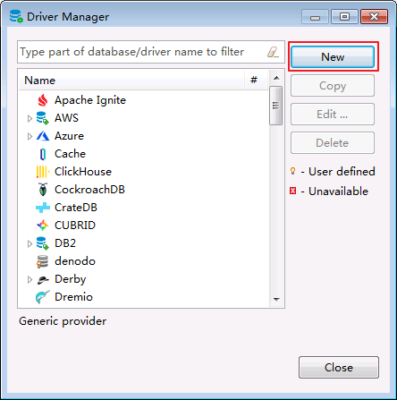
- 新建的连接名字为FI-hive-test，连接信息如下,完成后点击OK

1. org.apache.hive.jdbc.HiveDriver
2. jdbc:hive2://172.16.4.121:24002,172.16.4.122:24002,172.16.4.123:24002/;serviceDiscoveryMode=zooKeeper;zooKeeperNamespace=hiveserver2;sasl.qop=auth-conf;auth=KERBEROS;principal=hive/hadoop.hadoop.com@HADOOP.COM
3. Hadoop
4. 点Add File在下载好的hive客户端lib中把所有jar包加进去
- 菜单栏选择
File->New->Database Connection.点击 Next.

- 选择FI-hive-test点击NEXT
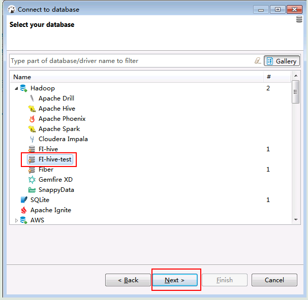
- 点击Finish

- 右键选择FI-hive-test点击Edit Connection
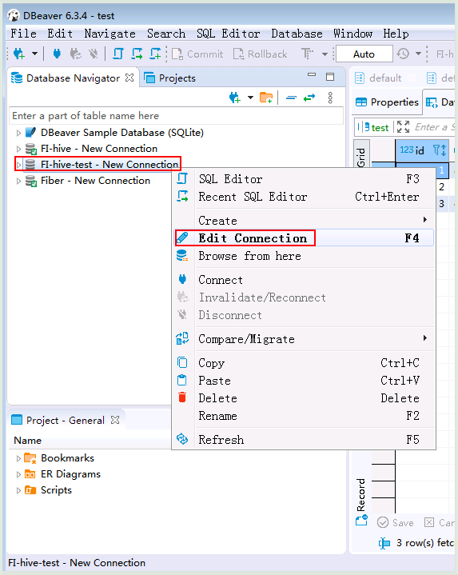
- 点击Test connection
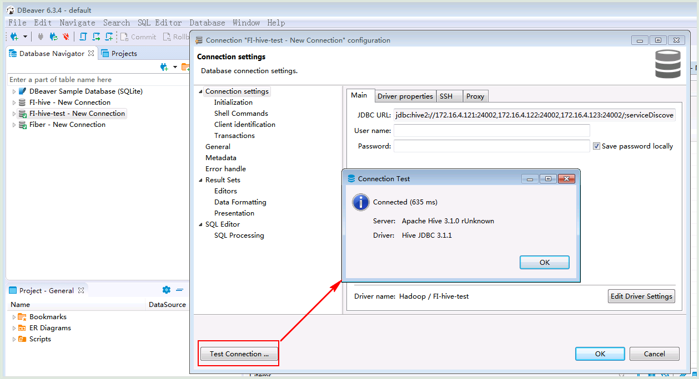
- 查看结果数据

使用自定义JDBC对接Spark2x¶
- （重要 fi6.5.1）准备spark2x jdbc连接驱动jar包
登陆linux端spark2x客户端找到jdbc相关依赖，比如：/opt/145_651hdclient/hadoopclient/Spark2x/spark/jars/jdbc

将该路径下所有的jar包拷贝到windows本地目录，比如E:\145config\spark2xjars, 注意里面含有一个jdbc_pom.xml文件，需要删除

继续登陆linux端spark2x客户端路径/opt/145_651hdclient/hadoopclient/Spark2x/spark/jars,分别找到如下4个jar包，拷贝到windows本地目录，比如E:\145config\spark2xjars
log4j-1.2.17.jar
woodstox-core-5.0.3.jar
stax2-api-3.1.4.jar
commons-configuration2-2.1.1.jar

说明: 如果是mrs8.0.2版本准备的依赖为：
-
登陆linux端spark2x客户端找到jdbc相关依赖，比如：
/opt/80_135_hadoopclient2/hadoopclient/Spark2x/spark/jars/jdbc下所有依赖 -
继续登陆linux端spark2x客户端路径
/opt/80_135_hadoopclient2/hadoopclient/Spark2x/spark/jars,分别找到如下5个jar包
log4j-1.2.17-atlassian-13.jar
commons-lang-2.6.jar
woodstox-core-5.0.3.jar
stax2-api-3.1.4.jar
commons-configuration2-2.1.jar
- 进入DBeaver界面，菜单选择
Database->DriverManager，在弹出的对话框中点击 New.
- 新建的连接名字为FI-spark2x-651-direct，连接信息如下,完成后点击OK

1. org.apache.hive.jdbc.HiveDriver
2. jdbc:hive2://172.16.4.141:24002,172.16.4.142:24002,172.16.4.143:24002/;serviceDiscoveryMode=zooKeeper;zooKeeperNamespace=sparkthriftserver2x;saslQop=auth-conf;auth=KERBEROS;principal=spark2x/hadoop.hadoop.com@HADOOP.COM;user.principal=developuser;user.keytab=E:/145config/user.keytab
3. Hadoop
4. 点Add File在上述步骤配置好的spark2x连接所有jar包加进去
注意：连接url的user.principal=developuser;user.keytab=E:/145config/user.keytab这两个参数必须加上，并且保证正确
连接url串，可在Linux客户端使用spark-beeline命令获取参考：

- 菜单栏选择
File->New->Database Connection.点击 Next.
- 选择FI-spark2x-651-direct点击NEXT

- 点击Finish

- 右键选择FI-spark2x-651-direct点击Edit Connection
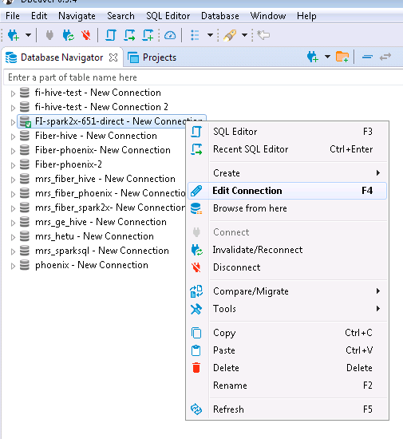
- 点击Test connection
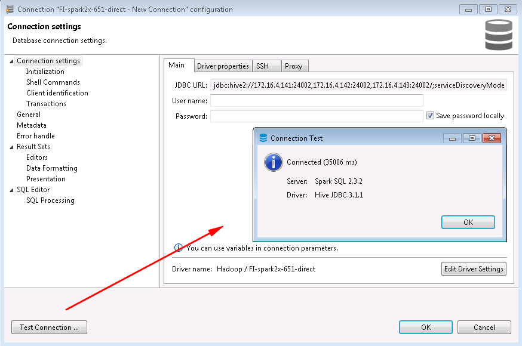
mrs 8.0.2的测试结果如下：
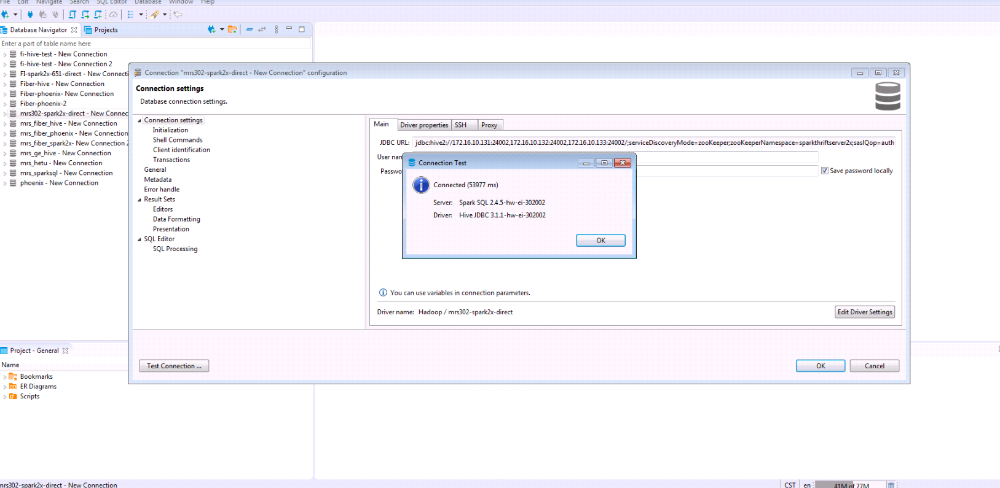
- 查看结果数据

mrs 8.0.2的测试结果如下：
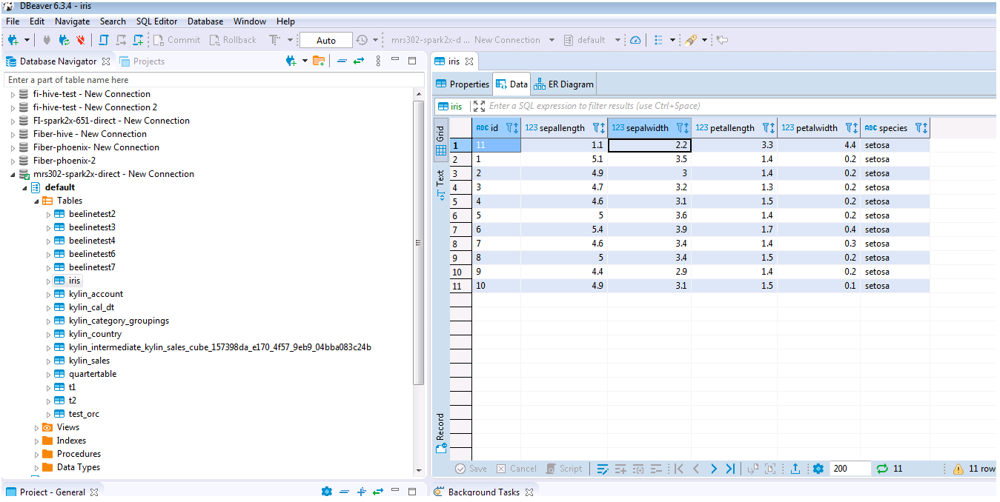
使用自定义JDBC对接Hetu¶
- 创建hetu对接配置路径
C:\ecotesting\hetu-config,准备一下认证文件
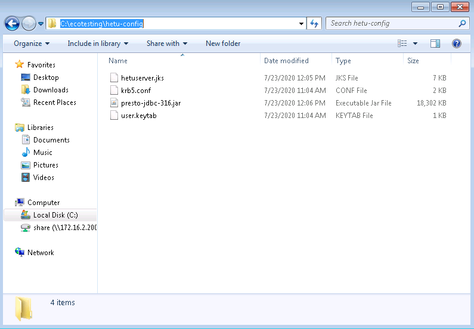
其中presto-jdbc-316.jar为Hetu对接jdbc驱动jar包，在客户端中获得
hetuserver.jks文件在服务端HSBroker下获得

user.keytab和krb5.conf文件为用户的认证文件，在manager上获得
- 进入DBeaver界面，菜单选择
Database->DriverManager，在弹出的对话框中点击 New.
- 新建的连接名字为FI-hetu-test，连接信息如下,完成后点击OK
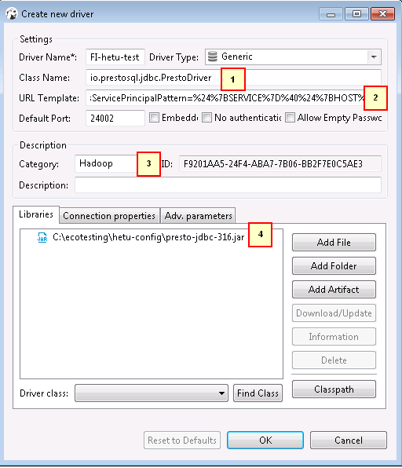
1. io.prestosql.jdbc.PrestoDriver
2. jdbc:presto://172.16.4.121:24002,172.16.4.122:24002,172.16.4.123:24002?serviceDiscoveryMode=zooKeeper&zooKeeperNamespace=hsbroker&deploymentMode=on_yarn&user=developuser&SSL=true&SSLTrustStorePath=C:/ecotesting/hetu-config/hetuserver.jks&KerberosConfigPath=C:/ecotesting/hetu-config/krb5.conf&KerberosPrincipal=developuser&KerberosKeytabPath=C:/ecotesting/hetu-config/user.keytab&KerberosRemoteServiceName=HTTP&KerberosServicePrincipalPattern=%24%7BSERVICE%7D%40%24%7BHOST%7D
3. Hadoop
4. 点Add File在下载好的hive客户端lib中把所有jar包加进去
注意： jdbc连接串中含有用户名信息以及相关配置文件的路径，请根据实际情况配置
- 菜单栏选择
File->New->Database Connection.点击 Next.
- 选择FI-hetu-test点击NEXT
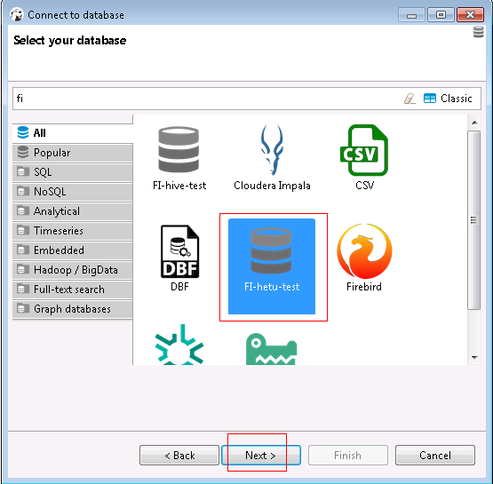
- 点击Finish

- 右键选择FI-hetu-test点击Edit Connection
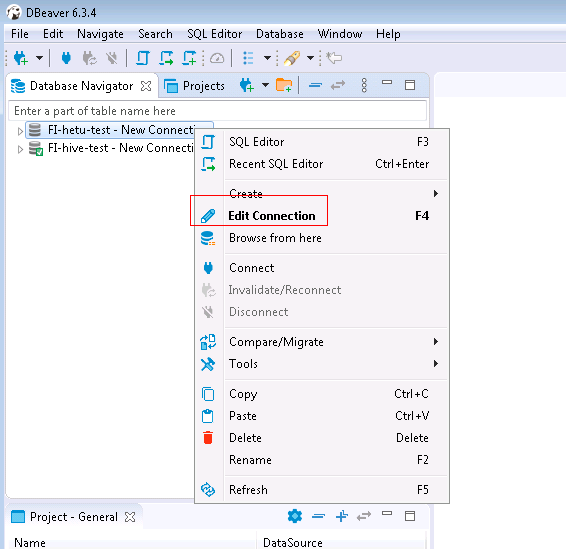
- 点击Test connection

- 查看结果数据

Fiber 简介¶
SQL开发工具，如DbVisualizer、DBeaver、Squirrel是数据库开发的常用选择，虽然这些工具大多不提供原生Hive、SparkSQL、Phoenix的支持，但是通过它们支持的自定义JDBC的能力，我们可以与FusionInsignt提供的Fiber组件的JDBC接口进行对接，实现这Hive、SparkSQL、Phoenix组件的统一SQL查询.
- Fiber架构图

本文档主要描述在Window操作系统，DBeaver通过Fiber方式对接FusionInsight HD的Hive、Spark2x、Phoenix组件.
Fiber认证方式配置¶
操作场景¶
Fiber的安全认证有kinit和keytab两种方式.具体参数配置说明可参考FusionInsight HD产品文档的业务操作指南->统一SQL(Fiber)->客户端配置章节.
前提条件¶
-
已完成准备工作.
-
将FusionInsight HD客户端的Fiber、Hive、Spark2x、HBase客户端文件夹，拷贝至本地新建目录
C:\ecotesting.假设FusionInsight HD客户端安装于/opt/hadoopclient目录，则： -
将
/opt/hadoopclient/Fiber拷贝至本地C:\ecotesting目录. -
将
/opt/hadoopclient/Hive拷贝至本地C:\ecotesting\Fiber目录. -
将
/opt/hadoopclient/Spark2x拷贝至本地C:\ecotesting\Fiber目录. -
将
/opt/hadoopclient/HBase拷贝至本地C:\ecotesting\Fiber目录.
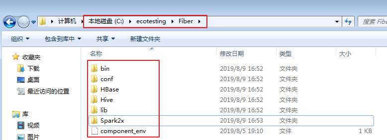
- 登录FusionInsight Manager的
系统->用户->更多（developuser）->下载认证凭证，下载developuser对应的认证凭证.将用户的 krb5.conf 和 user.keytab 文件拷贝到C:\ecotesting\Fiber\conf目录下.
操作步骤¶
- 修改配置文件
C:\ecotesting\Fiber\conf\fiber.xml.
Hive的JDBC配置示例：
<jdbc>
<identify>hive</identify>
<describe>hive jdbc configuration</describe>
<driverClass>org.apache.hive.jdbc.HiveDriver</driverClass>
<securityClass>com.huawei.fiber.DefaultAuthenticationCallback</securityClass>
<classPath>C:\\ecotesting\\Fiber\\Hive\\config;C:\\ecotesting\\Fiber\\Hive\\Beeline\\lib;C:\\ecotesting\\Fiber\\Hive\\Beeline\\conf</classPath>
<jdbcUrl>jdbc:hive2://172.16.4.121:24002,172.16.4.122:24002,172.16.4.123:24002/;serviceDiscoveryMode=zooKeeper;zooKeeperNamespace=hiveserver2;sasl.qop=auth-conf;auth=KERBEROS;principal=hive/hadoop.hadoop.com@HADOOP.COM</jdbcUrl>
<properties>
<property>
<name>java.security.krb5.conf</name>
<value>C:\\ecotesting\\Fiber\\conf\\krb5.conf</value>
</property>
<property>
<name>java.security.auth.login.config</name>
<value>C:\\ecotesting\\Fiber\\conf\\jaas.conf</value>
</property>
<property>
<name>zookeeper.server.principal</name>
<value>zookeeper/hadoop.hadoop.com</value>
</property>
<property>
<name>zookeeper.kinit</name>
<value>C:\\java64\\jdk\\bin\\kinit.exe</value>
</property>
</properties>
</jdbc>
Spark2x的JDBC配置示例：
<jdbc>
<identify>Spark2x</identify>
<describe>Spark2x jdbc configuration</describe>
<driverClass>org.apache.hive.jdbc.HiveDriver</driverClass>
<securityClass>com.huawei.fiber.DefaultAuthenticationCallback</securityClass>
<classPath>C:\\ecotesting\\Fiber\\Spark2x\\spark\\conf;C:\\ecotesting\\Fiber\\Spark2x\\spark\\jars</classPath>
<jdbcUrl>jdbc:hive2://172.16.4.121:24002,172.16.4.122:24002,172.16.4.123:24002;serviceDiscoveryMode=zooKeeper;zooKeeperNamespace=sparkthriftserver2x;saslQop=auth-conf;auth=KERBEROS;principal=spark2x/hadoop.hadoop.com@HADOOP.COM;</jdbcUrl>
<properties>
<property>
<name>java.security.krb5.conf</name>
<value>C:\\ecotesting\\Fiber\\conf\\krb5.conf</value>
</property>
<property>
<name>java.security.auth.login.config</name>
<value>C:\\ecotesting\\Fiber\\conf\\jaas.conf</value>
</property>
<property>
<name>zookeeper.server.principal</name>
<value>zookeeper/hadoop.hadoop.com</value>
</property>
<property>
<name>zookeeper.kinit</name>
<value>C:\\java64\\jdk\\bin\\kinit.exe</value>
</property>
</properties>
</jdbc>
Phoenix的JDBC配置示例：
<jdbc>
<identify>phoenix</identify>
<describe>phoenix jdbc configuration</describe>
<driverClass>org.apache.phoenix.jdbc.PhoenixDriver</driverClass>
<securityClass>com.huawei.fiber.DefaultAuthenticationCallback</securityClass>
<classPath>C:\\ecotesting\\Fiber\\HBase\\hbase\\lib;C:\\ecotesting\\Fiber\\HBase\\hbase\\conf</classPath>
<jdbcUrl>jdbc:phoenix</jdbcUrl>
<properties>
<property>
<name>java.security.krb5.conf</name>
<value>C:\\ecotesting\\Fiber\\conf\\krb5.conf</value>
</property>
<property>
<name>java.security.auth.login.config</name>
<value>C:\\ecotesting\\Fiber\\conf\\jaas.conf</value>
</property>
<property>
<name>zookeeper.server.principal</name>
<value>zookeeper/hadoop.hadoop.com</value>
</property>
<property>
<name>zookeeper.kinit</name>
<value>C:\\java64\\jdk\\bin\\kinit.exe</value>
</property>
</properties>
</jdbc>
- 对接Phoenix时，需要修改配置文件
C:\ecotesting\Fiber\HBase\hbase\conf\hbase-site.xml在末尾新增属性 hbase.myclient.keytab 和 hbase.myclient.principal.
<property>
<name>hbase.myclient.keytab</name>
<value>C:\\ecotesting\\Fiber\\conf\\user.keytab</value>
</property>
<property>
<name>hbase.myclient.principal</name>
<value>developuser</value>
</property>
-
在
C:\ecotesting\Fiber\conf目录下新建 jaas.conf 文件，示例如下（如果已配置可以略过此步）：Client { com.sun.security.auth.module.Krb5LoginModule required useKeyTab=true keyTab="C:\\ecotesting\\Fiber\\conf\\user.keytab" principal="developuser" useTicketCache=false storeKey=true debug=true; }; -
指定DBeaver的JDK虚拟机.在DBeaver安装目录下，打开dbeaver.ini设置 -vm 参数的值，参数和值之间需要换行（如果已配置可以略过此步）.
示例如下：
-vm
C:\java64\jdk\bin
配置文件最后加上：
-Djava.security.auth.login.config=C:\\ecotesting\\Fiber\\conf\\jaas.conf
-Dzookeeper.sasl.clientconfig=Client
-Dzookeeper.auth.type=kerberos
-Dzookeeper.server.principal=zookeeper/hadoop.hadoop.com
完成后重启dbeaver配置生效
DBeaver对接Fiber¶
操作场景¶
DBeaver通过Fiber方式对接FusionInsight HD的Hive、Spark2x、Phoenix组件.
操作步骤¶
DBeaver通过Fiber对接Hive¶
- 进入DBeaver界面，菜单选择
Database->DriverManager，在弹出的对话框中点击 New.
- 填写基本信息如下：
Driver Name：Fiber（自定义）
Class Name：com.huawei.fiber.FiberDriver
URL Template：jdbc:fiber://
Default Port：2345（可随便写）
Category: Hadoop
C:\ecotesting\Fiber\lib所有的jar包.

- 点击 Connection properties，增加两个属性.点击 OK.
defaultDriver = hive fiberconfig = C:\\ecotesting\\Fiber\\conf\\fiber.xml

- 菜单栏选择
File->New->Database Connection.点击 Next.
- 选择 Fiber，点击 Next.

- “User name”和“Password”可以不填写，点击 Connection details (name,type,...).

- “Connection name”输入 Hadoop - Fiber.点击 back.

- 确认“defaultDirver”为 hive.其余选项保持默认.点击 Finish.
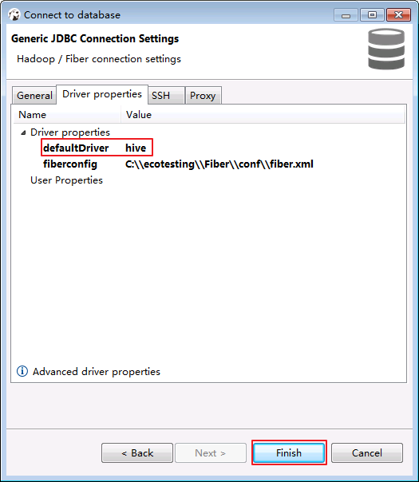
-
测试hive连接.
-
右键
Database Navigator->Hadoop - Fiber选择 Edit Connection.
-
点击
Driver properties确认“defaultDirver”为 hive，点击 Test Connection ...，返回使用的Server和Driver版本信息，则连接成功.点击 OK 关闭配置窗口.
-
双击
Database Navigator->Hadoop - Fiber，返回默认数据库 default 则表示通过Fiber连接Hive成功.

- 查看Hive表的数据.点击
default->tables->student，在Data页面可查看student表数据.

-
SQL查询Hive表的数据.
-
在菜单栏选择
SQL Editor->New SQL Editor.
-
输入查询语句，点击右三角执行脚本，返回查询表的数据.
SELECT * FROM student;
-
向Hive表test插入数据
-
在SQL Editor中输入以下脚本创建存储格式为textfile，分隔符为“,”的表 test.表的存储格式必须为 textfile，否则不能使用LOAD DATA方式向表插入数据.
CREATE TABLE IF NOT EXISTS test (id string, name STRING) ROW FORMAT DELIMITED FIELDS TERMINATED BY ',' STORED AS textfile;
-
登录FusionInsight集群客户端，编辑数据文件 data_input.txt，并执行 hdfs dfs -put data_input.txt /tmp 上传至集群的HDFS文件系统的/tmp/目录下.
data_input.txt内容如下：
1,Abbey 2,Andy
-
在SQL Editor中输入以下脚本将data_input.txt数据导入表test.
LOAD DATA INPATH '/tmp/data_input.txt' OVERWRITE INTO TABLE test;
-
在SQL Editor中输入脚本查询表test.
SELECT * FROM test;
DBeaver通过Fiber对接Spark2x¶
- 右键
Database Navigator->Hadoop - Fiber选择 Edit Connection.
- 点击
Driver properties修改“defaultDirver”为 spark2x，点击 Test Connection ...，返回使用的Server和Driver版本信息，则连接成功.点击 OK 关闭提示窗口.

- 点击 OK 关闭配置窗口，弹出“Connection "Hadoop - Fiber" has changed. Do you want to reconnect?”，点击 是.

- 连接成功后，返回默认数据库 default 则表示通过Fiber连接Spark2x成功.
- 查看表的数据.点击
default->tables->student，在Data页面可查看student表数据.
-
SQL查询表的数据.
-
在菜单栏选择
SQL Editor->New SQL Editor. -
输入查询语句，点击右三角执行脚本，返回查询表的数据.
SELECT * FROM student; -
向表test插入数据
-
登录FusionInsight集群客户端，编辑数据文件 data_input.txt，并执行 hdfs dfs -put data_input.txt /tmp 上传至集群的HDFS文件系统的/tmp/目录下.
data_input.txt内容如下：
3,Benny 4,Miki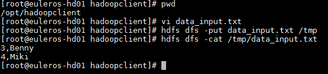
-
在SQL Editor中输入以下脚本将data_input.txt数据导入表test.
LOAD DATA INPATH '/tmp/data_input.txt' OVERWRITE INTO TABLE test;
-
在SQL Editor中输入脚本查询表test.
SELECT * FROM test;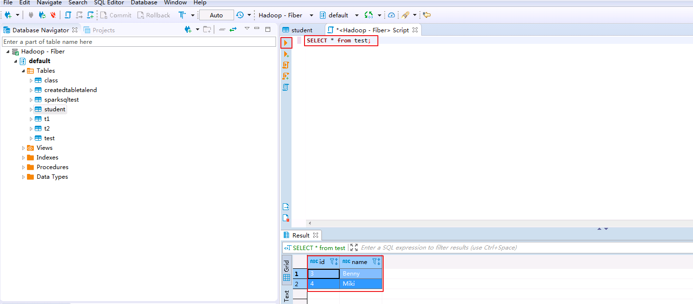
DBeaver通过Fiber对接Phoenix¶
- 右键
Database Navigator->Hadoop - Fiber选择 Edit Connection.
- 点击
Driver properties修改“defaultDirver”为 phoenix，点击 Test Connection ...，返回使用的Server和Driver版本信息，则连接成功.点击 OK 关闭提示窗口.

- 点击 OK 关闭配置窗口，弹出“Connection "Hadoop - Fiber" has changed. Do you want to reconnect?”，点击 是.

- 连接成功后，返回数据库 SYSTEM 则表示通过Fiber连接Phoenix成功.

- 登录FusionInsight集群客户端，执行hbase shell的“create_namespace”命令创建新的命名空间 MY_NS.
create_namespace 'MY_NS'

- 在菜单栏选择
SQL Editor->New SQL Editor，SQL Editor中输入以下脚本创建表和数据，点击 执行脚本.
执行脚本.
CREATE TABLE IF NOT EXISTS MY_NS.TEST (id integer not null primary key, name varchar);
UPSERT INTO MY_NS.TEST VALUES(1,'John');
UPSERT INTO MY_NS.TEST VALUES(2,'Tom');
UPSERT INTO MY_NS.TEST VALUES(3,'Manson');
UPSERT INTO MY_NS.TEST VALUES(4,'Aurora');

- 右键
Database Navigator->Hadoop - Fiber选择 Refresh 则可看到新建的命名空间 MY_NS.

- 查看表的数据.点击
MY_NS->tables->TEST，在Data页面可查看test表数据.
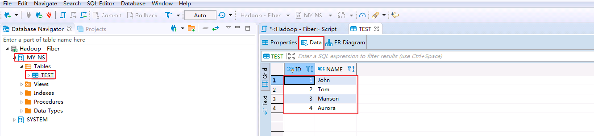
- SQL修改表的数据.在SQL Editor输入修改脚本并执行.
UPSERT INTO MY_NS.TEST VALUES(1,'Jessy');
- SQL删除表的数据.在SQL Editor输入删除脚本并执行.
DELETE FROM MY_NS.TEST WHERE ID=4;
- SQL查询表的数据.在SQL Editor输入查询脚本并执行.“ID=1”的“NAME”已被修改为“Jessy”，“ID=4”的记录已被删除.
SELECT * FROM MY_NS.TEST;

FAQ¶
-
对接Phoenix时返回Driver: Fiber?
【问题描述】
对接Phoenix时，点击 Test Connection ，没有正确返回Server和Driver的版本.
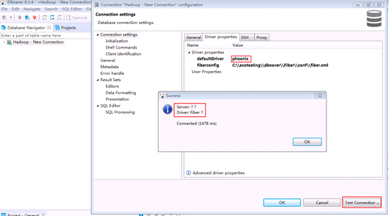
【查看问题原因】
首先登陆后台查看日志
C:\Users\haoxi\AppData\Roaming\DBeaverData\workspace6\.metadata\dbeaver-debug.log查看日志：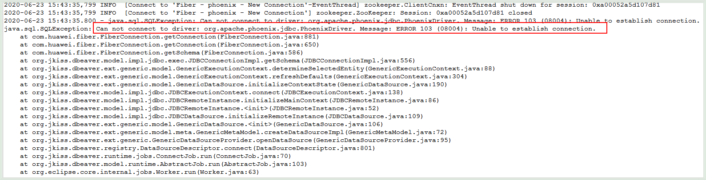
java.sql.SQLException: Can not connect to driver: org.apache.phoenix.jdbc.PhoenixDriver. Message: ERROR 103 (08004): Unable to establish connection. at com.huawei.fiber.FiberConnection.getConnection(FiberConnection.java:881) at com.huawei.fiber.FiberConnection.getConnection(FiberConnection.java:650)【解决方法】
确认是否已指定DBeaver的JDK虚拟机.在DBeaver安装目录下，打开dbeaver.ini设置 -vm 参数的值，参数和值之间需要换行.
示例如下：
-vm C:\Program Files\Java\jdk1.8.0_202\bin